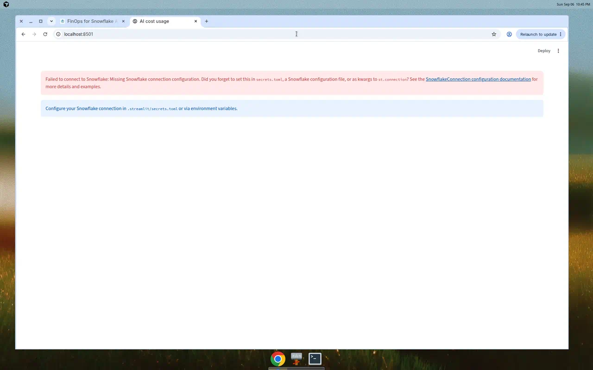
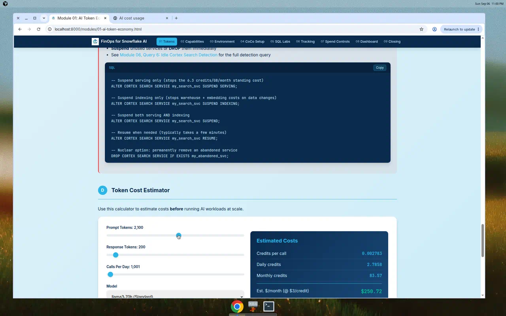
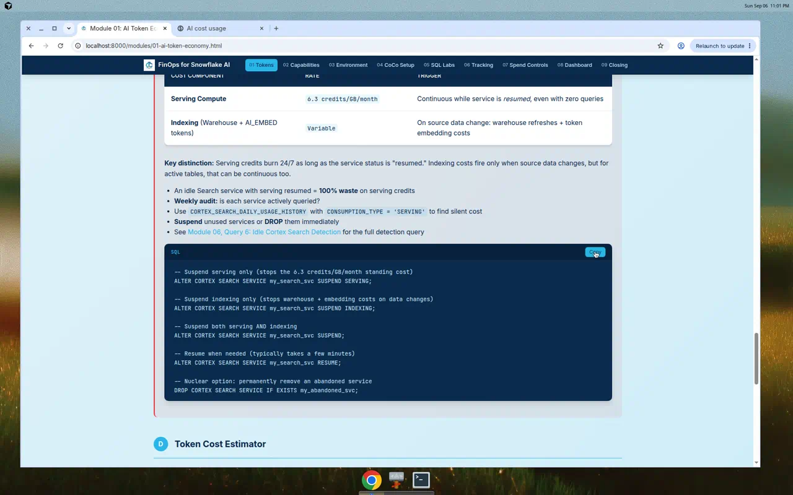

Snowflake AI services are serverless — there is no warehouse to watch, and traditional Resource Monitors do not cover AI token credits. This open-source toolkit gives you the SQL, dashboards, training, and skill files to make Cortex AI spend visible and governable before the monthly bill arrives.
See It in Action
End-to-end walkthrough: interactive modules, the live token-cost calculator, and copy-to-clipboard Snowflake SQL.
Interactive Nine-Module Training
A 90-minute, hands-on workshop. Each module is a self-contained page with copyable SQL, checkpoints, and interactive tools. Click any module to begin.
Streamlit Cost Dashboard

The dashboard connects to SNOWFLAKE.ACCOUNT_USAGE via a stored procedure. Add your Snowflake
connection to populate the KPIs, trends, and per-model breakdowns.
A single-pane view of AI credit consumption across every Cortex service, deployable to Streamlit in Snowflake or run locally.
- KPI tiles: total AI credits, total API calls, and active services
- Daily credit trend across the selected time range (7d–90d)
- Cortex AI SQL and AI Functions broken down by model
- Cortex Search cost by service to surface idle indexes
- Full cost-by-category summary with drill-down tables


Copyable Snowflake SQL
Grab and run these directly in Snowsight. The full library lives in sql/ in the repository.
USE ROLE ACCOUNTADMIN;
CREATE DATABASE IF NOT EXISTS cortex_lab
COMMENT = 'AI for FinOps training environment';
CREATE SCHEMA IF NOT EXISTS cortex_lab.ai_workshop;
CREATE WAREHOUSE IF NOT EXISTS cortex_wh
WAREHOUSE_SIZE = 'SMALL'
AUTO_SUSPEND = 60
AUTO_RESUME = TRUE
INITIALLY_SUSPENDED = TRUE;
-- Resource Monitor caps WAREHOUSE compute (not AI token credits)
CREATE RESOURCE MONITOR IF NOT EXISTS cortex_lab_monitor
WITH CREDIT_QUOTA = 50
TRIGGERS
ON 75 PERCENT DO NOTIFY
ON 90 PERCENT DO SUSPEND_IMMEDIATE;
ALTER WAREHOUSE cortex_wh SET RESOURCE_MONITOR = cortex_lab_monitor;SELECT FUNCTION_NAME,
COUNT(*) AS call_count,
ROUND(SUM(CREDITS), 4) AS total_ai_credits,
ROUND(SUM(CREDITS) * 3, 2) AS est_dollars -- ~$3/credit
FROM SNOWFLAKE.ACCOUNT_USAGE.CORTEX_AI_FUNCTIONS_USAGE_HISTORY
WHERE START_TIME >= DATEADD('day', -7, CURRENT_TIMESTAMP())
GROUP BY FUNCTION_NAME
ORDER BY total_ai_credits DESC;WITH costs AS (
SELECT SERVICE_NAME,
SUM(IFF(CONSUMPTION_TYPE = 'INDEXING', CREDITS, 0)) AS idx_credits,
SUM(IFF(CONSUMPTION_TYPE = 'QUERY', CREDITS, 0)) AS qry_credits
FROM SNOWFLAKE.ACCOUNT_USAGE.CORTEX_SEARCH_DAILY_USAGE_HISTORY
WHERE USAGE_DATE >= DATEADD('day', -30, CURRENT_TIMESTAMP())
GROUP BY SERVICE_NAME
)
SELECT SERVICE_NAME, idx_credits, qry_credits,
ROUND(qry_credits / NULLIF(idx_credits, 0) * 100, 1) AS query_pct
FROM costs
WHERE idx_credits > 0
ORDER BY query_pct ASC; -- lowest query_pct = most wasteful idle indexDeploy in Snowflake
Option A · Streamlit in Snowflake
- In Snowsight, open Projects → Streamlit and click + Streamlit App.
- Select the
cortex_lab.ai_workshopdatabase/schema and thecortex_whwarehouse. - Paste the contents of
dashboard/streamlit_app.py(ortraining/sql/07-streamlit-app.py). - Create the
GET_AI_COST_USAGEstored procedure the app calls, then Run.
Option B · Run Locally
git clone https://github.com/velunatsf/snowflake-ai-finops.git cd snowflake-ai-finops/dashboard pip install -r requirements.txt # Add Snowflake creds to .streamlit/secrets.toml streamlit run streamlit_app.py
Configure a [connections.snowflake] section in .streamlit/secrets.toml with your
account, user, role, warehouse, database, and schema.
First time on Snowflake?
Sign up for a Cortex Code account at signup.snowflake.com/cortex-code (includes free credits and ACCOUNTADMIN access), then start with Module 03: Environment Setup.